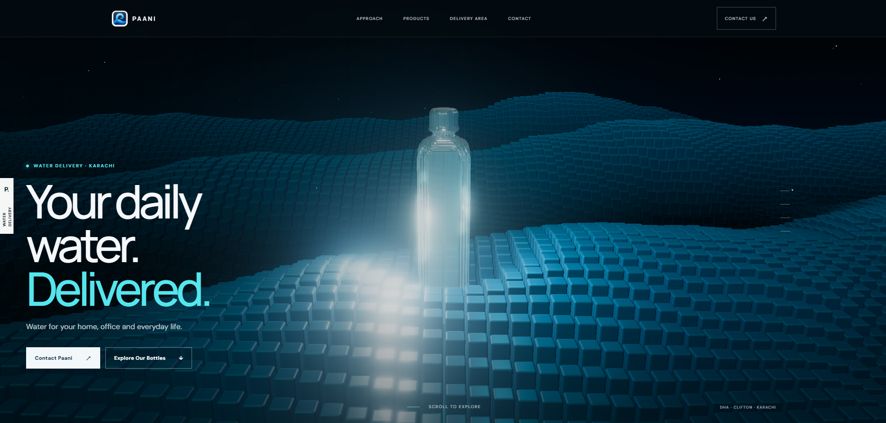
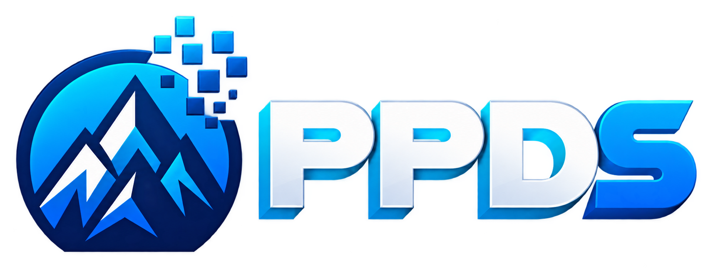
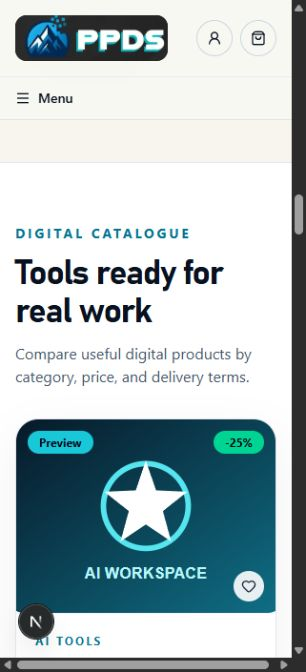
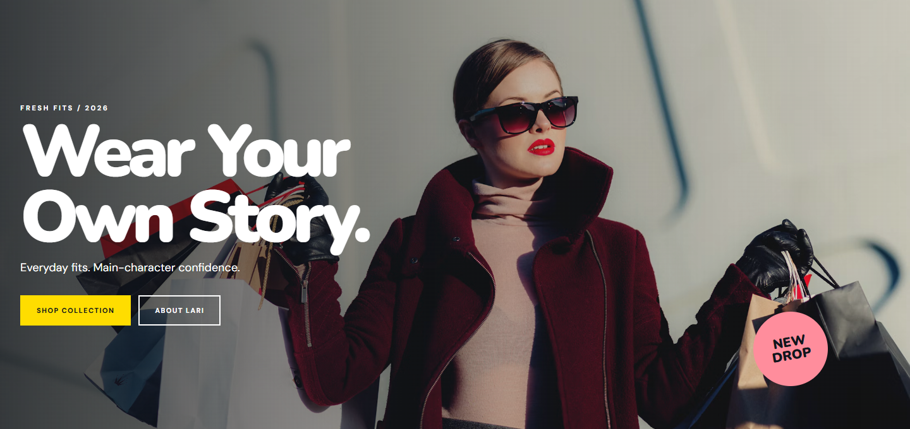
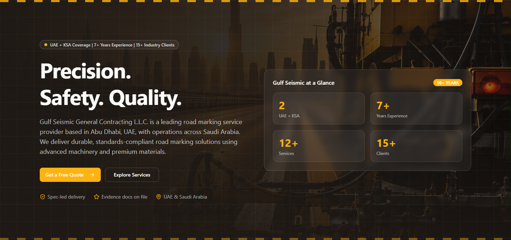
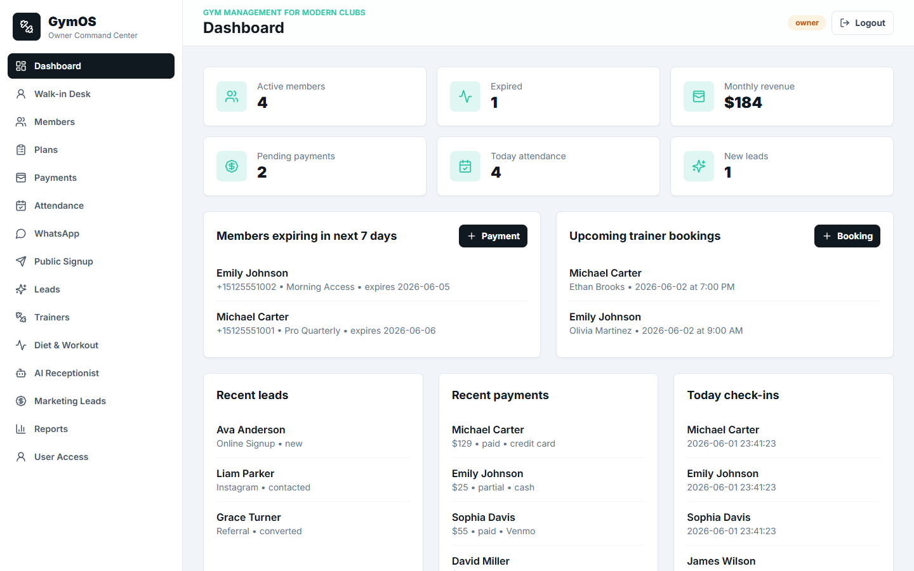
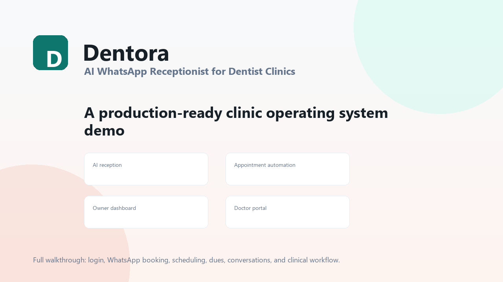
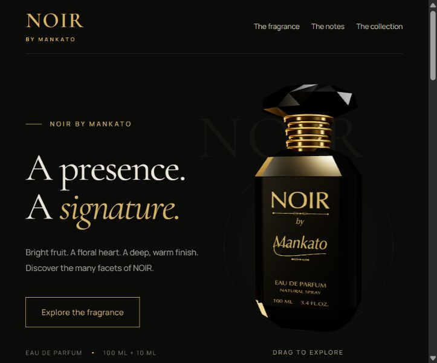

Talal
Hussain
Product Engineer + SQA Specialist
Talal Hussain · Product Engineer
I turn complex workflows into clear, tested products across web, mobile, AI, automation, and desktop.

I’m Talal Hussain, a product engineer and SQA specialist with two years of professional experience. I build systems that coordinate people, data, decisions, and real-world operations—not just polished screens.
My work spans AI products, mobile apps, SaaS platforms, commerce, automation, and Windows applications. I translate messy processes into products another team can understand, test, operate, and extend.
A concise professional snapshot—identity, location, education, experience, and the disciplines connecting the work.
Product Engineer + SQA Specialist
Available for worldwide collaboration
Graduate · technical and product foundation
2026–2028
Two years delivering product engineering, SQA, automation, mobile, web, and desktop work for real client workflows.
From workflow discovery to tested release
Technology is selected around the workflow, delivery constraints, and the people who will operate the system after launch.
Discovery, workflows, architecture, delivery
Interfaces, dashboards, commerce
Cross-platform apps and notifications
APIs, auth, business rules
Relational systems and reporting
Controlled intelligence and workflows
Packaged tools and local persistence
Risk, verification, hardening
Each case connects interface design with data, business rules, automation, and release readiness.
Logistics SaaS · Multi-platform MVP
A water distribution platform spanning bottled-water sales, 19L subscriptions, delivery operations, and admin reporting.
Commerce + WhatsApp operations
A software-services storefront and production-minded WhatsApp sales system with controlled payment review and secure product delivery.

Storefront + operationsDigital products.
AI EdTech · Web + Windows desktop
An adaptive tuition teacher that explains homework, creates quizzes, tracks weak topics, and gives parents a clear progress view.
Commerce, AI operations, business systems, immersive web, and large-scale content platforms.

Fashion commerceStorefront, cart, checkout, content, orders, and protected administration.

Enterprise web128 service-city pages, project evidence, document libraries, and quote journeys.

Business SaaSMembers, attendance, payments, renewals, trainers, leads, and reporting.

AI operationsAI WhatsApp receptionist with real slots, booking state, reminders, and tools.

Immersive webBlack-and-gold product storytelling with an interactive 3D bottle and motion-led purchase flow.
I work best where software needs to understand the business—not just display a polished interface.
Products shaped around the user journey, roles, data, and operational constraints.
Interfaces · APIs · Data · DeliveryHuman-controlled workflows for support, education, lead handling, and operations.
LLMs · Agents · Workflow designRisk analysis, test design, security boundaries, smoke checks, and hardening.
Strategy · Verification · QAHave a workflow that needs better software?